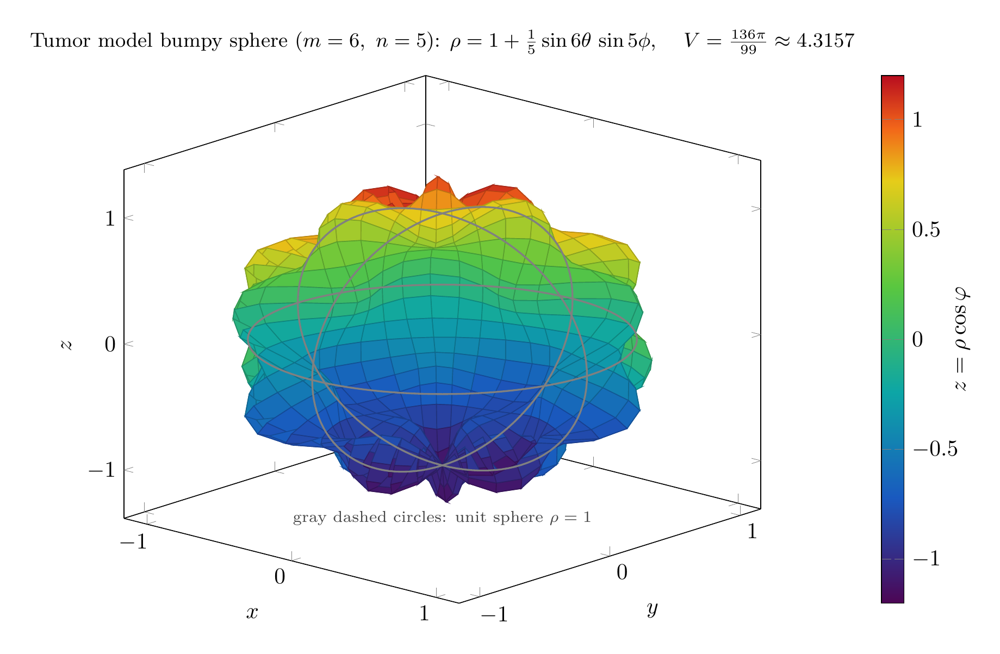

Please solve the problem in the following image.
(Image `20260929_203401_089663_utc_0800_0.png`. Alt text: Image: human_20260929_203401_089663_utc_0800)
20260929_203401_089663_utc_0800_0.png
\documentclass[border=10pt]{standalone}
\usepackage{pgfplots}
\pgfplotsset{compat=1.18, trig format plots=deg}
\begin{document}
\begin{tikzpicture}
\begin{axis}[
width=11.5cm, height=9.8cm,
domain=0:360, y domain=0:180,
samples=49, samples y=25,
colormap={turbolike}{rgb(0cm)=(0.30,0.02,0.33); rgb(0.2cm)=(0.10,0.35,0.75);
rgb(0.4cm)=(0.05,0.65,0.65); rgb(0.6cm)=(0.35,0.78,0.25);
rgb(0.8cm)=(0.90,0.80,0.10); rgb(0.9cm)=(0.95,0.40,0.10);
rgb(1cm)=(0.72,0.05,0.12)},
colorbar, point meta min=-1.2, point meta max=1.2,
colorbar style={ylabel={$z=\rho\cos\varphi$}, ylabel shift=-8pt, width=0.35cm,
ytick={-1,-0.5,0,0.5,1}},
view={42}{20},
xlabel=$x$, ylabel=$y$, zlabel=$z$,
xtick={-1,0,1}, ytick={-1,0,1}, ztick={-1,0,1},
title={Tumor model bumpy sphere ($m=6,\ n=5$): $\rho=1+\frac{1}{5}\sin 6\theta\,\sin 5\phi$,
$\quad V=\frac{136\pi}{99}\approx 4.3157$},
title style={align=center, font=\small},
]
\addplot3[surf, shader=faceted]
({cos(x)*sin(y)*(1+0.2*sin(6*x)*sin(5*y))},
{sin(x)*sin(y)*(1+0.2*sin(6*x)*sin(5*y))},
{cos(y)*(1+0.2*sin(6*x)*sin(5*y))});
\addplot3[gray, dashed, thick, domain=0:360, samples=121] ({cos(x)},{sin(x)},{0});
\addplot3[gray, dashed, thick, domain=0:360, samples=121] ({cos(x)},{0},{sin(x)});
\addplot3[gray, dashed, thick, domain=0:360, samples=121] ({0},{cos(x)},{sin(x)});
\node[anchor=north, gray!55!black, align=center, font=\scriptsize] at (axis cs:0,0,-1.30)
{gray dashed circles: unit sphere $\rho=1$};
\end{axis}
\end{tikzpicture}
\end{document}

pgfplots_0.png
---
# Triple Integral in Spherical Coordinates — Tumor "Bumpy Sphere" (Section 15.9, Exercise 45)
**Problem.** The surfaces
$$
\rho = 1 + \tfrac{1}{5}\sin m\theta\,\sin n\phi
$$
have been used as models for tumors. Find the volume enclosed by the "bumpy sphere" with $m=6$, $n=5$.
---
## Step 1 — Recognize the region and set up the integral
The surface is already given **as a graph in spherical coordinates**: $\rho=\rho(\theta,\varphi)$ with
$$
\rho(\theta,\varphi)=1+\tfrac15 \sin(6\theta)\sin(5\varphi),\qquad 0\le \theta\le 2\pi,\quad 0\le\varphi\le\pi .
$$
Since $\left|\tfrac15\sin 6\theta\sin 5\varphi\right|\le \tfrac15$, we always have $\rho\ge \tfrac45>0$: every ray from the origin hits the surface exactly once, so the enclosed solid is **radially simple**,
$$
E=\Big\{(\rho,\theta,\varphi):\ 0\le\theta\le 2\pi,\ 0\le\varphi\le\pi,\ 0\le \rho\le 1+\tfrac15\sin 6\theta\sin 5\varphi\Big\}.
$$
Using the spherical volume element $dV=\rho^{2}\sin\varphi\,d\rho\,d\varphi\,d\theta$,
$$
V=\iiint_E \rho^{2}\sin\varphi\,d\rho\,d\varphi\,d\theta .
$$
*Key structural fact for this whole family of problems:* when the boundary is $\rho=f(\theta,\varphi)>0$, the $\rho$-integration collapses the triple integral to a weighted double integral,
$$
V=\frac13\int_0^{2\pi}\!!\int_0^{\pi} f(\theta,\varphi)^{3}\,\sin\varphi\ d\varphi\, d\theta .
$$
The picture shows why: $m=6$ creates 6 folds around the equator, $n=5$ creates 5 rings from pole to pole, and the radius oscillates between $\rho_{\min}=0.8$ and $\rho_{\max}=1.2$ about the unit sphere (gray dashed circles).
---
pgfplots_1.png
---
## Step 2 — Integrate in $\rho$
$$
\int_0^{\rho(\theta,\varphi)}\rho^{2}\,d\rho=\frac{\rho(\theta,\varphi)^{3}}{3}
=\frac{1}{3}\Big(1+\tfrac15\sin 6\theta\sin 5\varphi\Big)^{3}
=\frac{\big(\sin 5\varphi\,\sin 6\theta+5\big)^{3}}{375},
$$
so
$$
V=\frac13\int_0^{2\pi}\!!\int_0^{\pi}\Big(1+\tfrac15\sin 6\theta\sin 5\varphi\Big)^{3}\sin\varphi\ d\varphi\, d\theta .
$$
## Step 3 — Expand the cube; orthogonality kills most terms
Put $a=\tfrac15\sin 6\theta\sin 5\varphi$, so $(1+a)^3=1+3a+3a^2+a^3$. Each term separates into a $\theta$-factor times a $\varphi$-factor, and the needed pieces are
$$
\int_0^{\pi}\sin\varphi\,d\varphi = 2,\qquad
\int_0^{\pi}\sin 5\varphi\,\sin\varphi\,d\varphi = 0,\qquad
\int_0^{\pi}\sin^{2}5\varphi\,\sin\varphi\,d\varphi = \frac{100}{99},\qquad
\int_0^{\pi}\sin^{3}5\varphi\,\sin\varphi\,d\varphi = 0,
$$
$$
\int_0^{2\pi}\sin 6\theta\,d\theta = 0,\qquad
\int_0^{2\pi}\sin^{2}6\theta\,d\theta = \pi,\qquad
\int_0^{2\pi}\sin^{3}6\theta\,d\theta = 0 .
$$
(The even-$\varphi$ power comes from $\sin^{2}5\varphi=\frac{1-\cos 10\varphi}{2}$ with $\int_0^{\pi}\cos(n\varphi)\sin\varphi\,d\varphi=-\frac{1+(-1)^{n}}{n^{2}-1}$; the odd powers vanish by symmetry.) Therefore the **linear term $3a$ and the cubic term $a^3$ integrate to zero**, and
$$
V=\frac13\left[\underbrace{2\cdot 2\pi}_{\text{constant}}+\underbrace{3\cdot\frac{1}{25}\cdot\frac{100}{99}\cdot\pi}_{\text{quadratic}}\right]
=\frac13\left(4\pi+\frac{4\pi}{33}\right).
$$
## Step 4 — The iterated form a CAS actually returns
Doing one integration at a time (Maple / Mathematica / SymPy all produce this):
$$
\int_0^{\pi}\tfrac13\Big(1+\tfrac15\sin 6\theta\sin 5\varphi\Big)^{3}\sin\varphi\,d\varphi
=\frac{4}{99}\sin^{2}(6\theta)+\frac{2}{3}\;\equiv\; g(\theta),
$$
$$
V=\int_0^{2\pi} g(\theta)\,d\theta=\frac{4}{99}\cdot\pi+\frac{2}{3}\cdot 2\pi=\frac{4\pi}{99}+\frac{4\pi}{3}=\frac{132\pi+4\pi}{99}.
$$
**Reading the plots.** Panel (a) is the horizontal slice $\varphi=\frac{\pi}{2}$ (there $\sin 5\varphi=1$), the polar curve $\rho=1+\frac15\sin 6\theta$ with its 6 maxima $\rho_{\max}=1.2$ and 6 minima $\rho_{\min}=0.8$. Panel (b) is the reduced integrand $g(\theta)$: it ripples 12 times about the mean level $\frac23$, and the **total area under $g$ on $[0,2\pi]$ is exactly the volume**. That mean level $\frac23=\frac13\cdot 2$ is precisely what the flat unit sphere $\rho\equiv 1$ would give — so
$$
V=\underbrace{\frac{4\pi}{3}}_{\text{unit ball}}+\underbrace{\frac{4\pi}{99}}_{\text{net contribution of the bumps}}\approx 4.18879+0.12693 .
$$
## Step 5 — Verification
| method | value |
|---|---|
| Symbolic (SymPy, exact) | $136\pi/99=4.31572324129507\ldots$ |
| Simpson quadrature, $4001^2$ nodes on $[0,2\pi]\times[0,\pi]$ | $4.315723241294999$ (relative error $1.6\times10^{-14}$) |
| Monte-Carlo in Cartesian space, $2\times10^{7}$ samples | $4.31650\pm0.00169$ (agrees within $1\sigma$) |
Sanity bracket from $0.8\le\rho\le 1.2$:
$$
\frac{4\pi}{3}(0.8)^3=2.1447\ \le\ V\ \le\ \frac{4\pi}{3}(1.2)^3=7.2382 ,
$$
and $4.3157$ lies inside it, just above the unit-ball value $4\pi/3\approx4.1888$ — exactly as the orthogonality argument predicts (odd harmonics cancel, the squared harmonic always adds a positive amount).
---
## Final Answer
$$
\boxed{V=\dfrac{136\pi}{99}\approx 4.3157}
$$
**Recipe for this problem type.**
1. Boundary given as $\rho=f(\theta,\varphi)>0$ $\Rightarrow$ radially simple solid: $0\le\rho\le f$, $0\le\varphi\le\pi$, $0\le\theta\le2\pi$.
2. Integrate $\rho^2$ first: $V=\frac13\int_0^{2\pi}\int_0^{\pi} f^{3}\sin\varphi\,d\varphi\,d\theta$.
3. Expand $f^{3}$; terms separate. Odd harmonics of $\sin(k\theta)$ (and of $\sin(k\varphi)$ against $\sin\varphi$) integrate to $0$, so only the constant and the even terms survive.
4. Let the CAS perform the expansion and integration; then confirm numerically and check $\frac{4\pi}{3}\rho_{\min}^{3}\le V\le\frac{4\pi}{3}\rho_{\max}^{3}$.